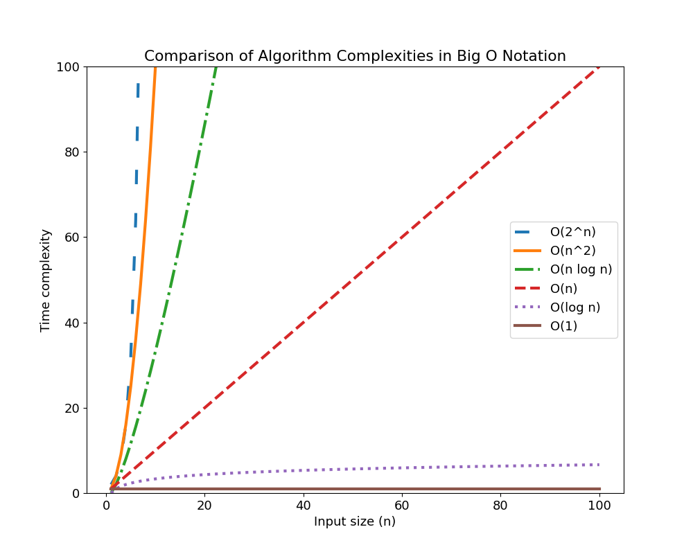

Introduction
Why {index}LeetCode?
Coding challenges are a great way to practice problem-solving, algorithm development, and logical thinking. They showcase your creativity and innovation while improving your coding techniques. This book offers diverse coding challenges to help you develop your skills.
{index}Coding challenges could be programming puzzles or mathematical problems that require coding solutions. Each challenge requires different coding skills and is designed to challenge and develop a particular set of skills.
The coding challenges in this book are picked from LeetCode. It is a popular online platform for programmers and software engineers that provides many coding challenges and problems. The website was launched in 2015 and has since grown to become one of the go-to resources for coding practice, technical interview preparation, and skills enhancement.
LeetCode offers diverse coding challenges, ranging from easy to hard, covering a wide range of topics such as algorithms, data structures, databases, system design, and more. The problems are created by industry experts and are designed to simulate real-world scenarios, allowing you to gain practical experience in problem-solving.
One feature that makes LeetCode stand out is its extensive discussion forum, where you can interact, share your solutions, and learn from one another. This fosters community and collaboration, as you can receive feedback on their solutions and ask for clarification on difficult problems.
LeetCode also provides premium services like mock interviews with real-world companies, career coaching, and job postings. These premium services are designed to help you prepare for technical interviews, sharpen your skills, and advance your careers.
LeetCode has become a popular resource for technical interview preparation, as many companies use similar problems to screen and evaluate potential candidates. The platform has helped many users to secure job offers from top companies in the technology industry, including Google, Microsoft, and Facebook.
In summary, LeetCode is a valuable resource for programmers and software engineers looking to improve their coding skills, prepare for technical interviews, and advance their careers. Its extensive collection of coding challenges, community discussion forums, and premium services make it an all-in-one platform for coding practice and skills enhancement.
A brief about {index}algorithm complexity
Algorithm complexity, also known as runtime complexity, is a measure of how the running time of an algorithm increases as the input size grows. It is an essential concept in computer science, as it helps programmers evaluate and optimize their algorithms' performance.
The complexity of an algorithm is usually measured in terms of its Big O notation, which describes the upper bound of the algorithm's running time as a function of the input size. For example, an algorithm with a time complexity of O(n) will have a running time proportional to the input size. In contrast, an algorithm with a time complexity of O(n^2) will have a running time proportional to the square of the input size.
Algorithm complexity is important because it helps programmers determine their algorithms' efficiency and scalability. In general, algorithms with lower complexity are more efficient, as they require less time and resources to process larger inputs. By analyzing the time complexity of an algorithm, programmers can identify potential performance bottlenecks and optimize their code accordingly.
In addition to time complexity, algorithms may also have space complexity, which measures the memory required to execute the algorithm. Space complexity is also measured in Big O notation and is important for optimizing the memory usage of an algorithm.

While it is important to optimize the performance of algorithms, it is also important to balance this with readability and maintainability. A highly optimized algorithm may be difficult to understand and maintain, which can lead to problems in the long run. Therefore, it is important to balance performance and readability when designing and implementing algorithms.
In summary, algorithm complexity is an essential concept in computer science that helps programmers evaluate and optimize their algorithms' performance. By analyzing an algorithm's time and space complexity, programmers can identify potential performance bottlenecks and optimize their code to improve efficiency and scalability.
Why {index}readable code?
Readable code is code that is easy to understand, maintain, and modify. It is an essential aspect of programming, as it ensures that code is accessible to other programmers and helps to prevent errors and bugs. Readable code is important for several reasons.
Firstly, readable code makes it easier for other programmers to understand and modify it. This is particularly important in collaborative projects where multiple programmers work on the same codebase. If the code is not readable, it can lead to confusion and errors, making it difficult for others to work on it.
Secondly, readable code helps to prevent bugs and errors. When code is easy to understand, it is easier to identify and fix potential issues before they become problems. This is important for ensuring the code is reliable and performs as expected.
Thirdly, readable code can improve the overall quality of the codebase. When code is easy to understand, it is easier to identify areas for improvement and make changes to improve the code. This can help improve the codebase's efficiency and maintainability, leading to a better overall product.
Finally, readable code can save time and money. When code is easy to understand, it is easier to maintain and modify. This can help reduce the time and resources required to make changes to the codebase, leading to cost savings in the long run.
In conclusion, readable code is an essential aspect of programming that ensures that code is accessible, error-free, and efficient. By focusing on readability when designing and implementing code, programmers can improve the quality and reliability of their code, leading to a better overall product.
I hope this book is an enjoyable and educational experience that will challenge and inspire you. Whether you want to enhance your skills, prepare for a technical interview, or just have fun, this book has something for you. So, get ready to put your coding skills to the test and embark on a challenging and rewarding journey through the world of coding challenges!